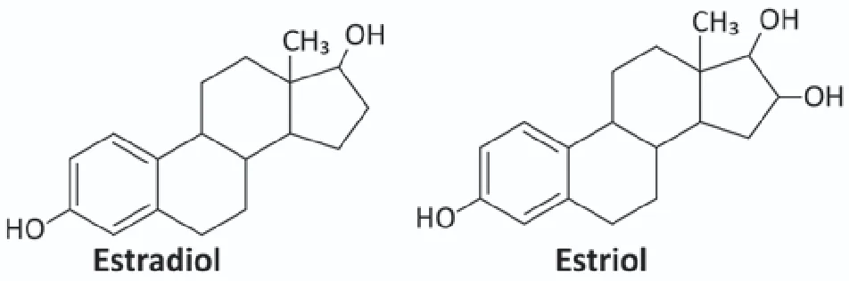
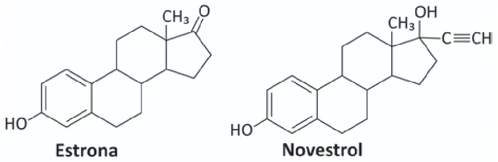
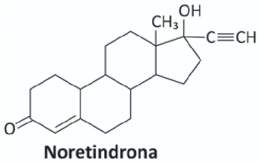
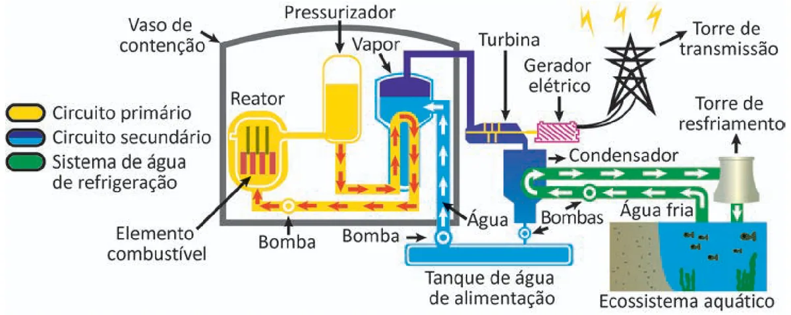
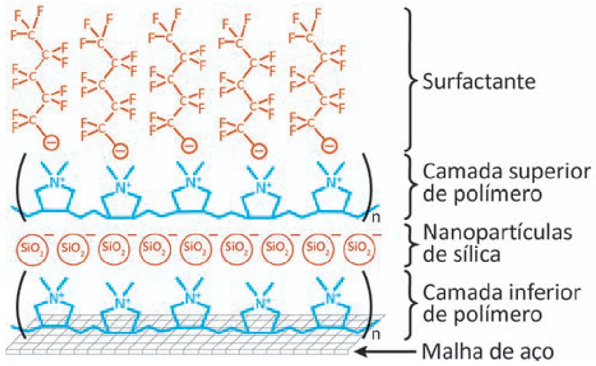
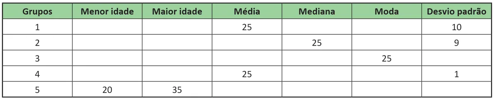

Importadas: 70 · mantidas de antes: 0 · não importadas: 20 · com imagem: 39 · alternativas-imagem: 5. Amostra: 7 questões sorteadas (10%). Os recortes da página ficam em 2025-d2/, gerados localmente por --relatorio (não versionados).
Não importadas
Questão
Motivo
109
alternativas A–E não encontradas
111
uma figura cobre as alternativas A, B, C; recorte incompleto: texto "MAZZETTO, S. E.; LOM" encostado na figura, fora do recorte
115
fórmula química sem índice no texto extraído: "C9H16O"; fórmula química sem índice no texto extraído: "C9H17O"; fórmula química sem índice no texto extraído: "C10H16O"; fórmula química sem índice no texto extraído: "C10H16O2"; fórmula química sem índice no texto extraído: "C10H18O2"
117
fórmula química sem índice no texto extraído: "O2"; fórmula química sem índice no texto extraído: "Cl2"; fórmula química sem índice no texto extraído: "TiO2"
119
uma figura cobre as alternativas A, B
120
alternativas A–E não encontradas
123
anulada no gabarito oficial
128
símbolo ou traço desenhado junto do texto (fórmula, fração ou sublinhado)
132
anulada no gabarito oficial
135
uma figura cobre as alternativas A, B, C, D, E
137
linhas encavaladas (fração ou fórmula em dois andares)
152
linhas encavaladas (fração ou fórmula em dois andares)
157
linhas encavaladas (fração ou fórmula em dois andares)
160
alternativas A–E não encontradas
161
alternativa A vazia
169
símbolo ou traço desenhado junto do texto (fórmula, fração ou sublinhado); figura entre as alternativas sem alternativa dona
172
sobrescrito sem forma em texto: "0,5"; símbolo ou traço desenhado junto do texto (fórmula, fração ou sublinhado); linhas encavaladas (fração ou fórmula em dois andares)
174
anulada no gabarito oficial
178
linhas encavaladas (fração ou fórmula em dois andares)
179
linhas encavaladas (fração ou fórmula em dois andares)
Alguns hormônios sexuais têm ganhado notável atenção nos últimos anos por suas concentrações cada vez maiores no solo e na água em todo o mundo. O motivo da preocupação é porque, em níveis poluentes, eles têm sido associados ao câncer de mama e ao câncer de próstata, além de perturbarem a fisiologia dos peixes, podendo, ainda, afetarem o desenvolvimento reprodutivo de animais domésticos e selvagens. Assim, o descarte inadequado desses hormônios representa uma séria ameaça ao solo, plantas, recursos hídricos e humanos. De baixa polaridade, eles apresentam uma solubilidade pequena e variável em água, dependendo dos grupos presentes em suas estruturas, representando um grande risco para os ambientes aquáticos. As figuras a seguir apresentam as estruturas de alguns desses hormônios.



MUHAMMAD, A. et al. Environmental Impact of Estrogens on Human, Animal and Plant Life: a Critical Review. Environment International, n. 99, 2017 (adaptado).
Do ponto de vista das interações químicas, qual desses hormônios apresenta maior solubilidade em ambientes aquáticos?
As usinas termonucleares são aquelas que produzem energia elétrica a partir da geração de energia térmica proveniente das reações nucleares. Normalmente, essas usinas funcionam por meio de dois circuitos, denominados circuito primário (vaso de pressão, pressurizador e bomba) e circuito secundário (gerador de vapor, turbina, condensador, tanque de alimentação e bombas), além de um sistema de água de refrigeração, formado por uma bomba ligada a uma fonte hídrica natural.

Durante a operação da usina, se o sistema de água de refrigeração funcionar de forma ineficiente pode causar poluição térmica, comprometendo a vida no ecossistema aquático.
Disponível em: www.eletronuclear.gov.br. Acesso em: 29 nov. 2021 (adaptado).
Para o ecossistema aquático, a ineficiência do sistema de água de refrigeração tem como consequência a
O despejo acidental de óleo nos oceanos tem ocasionado incontáveis prejuízos à vida marinha e à economia de regiões costeiras. Métodos tradicionais de tratamento do despejo geram resíduos de difícil descarte e nem sempre são eficazes. Por isso, pesquisadores desenvolveram um filtro capaz de separar óleo e água. O dispositivo é montado sobre uma malha de aço com uma sequência de camadas. A primeira camada é formada por um polímero de carga positiva, a segunda é composta por
polímero e a última é um surfactante, conforme apresentado na figura.
Representação esquemática do dispositivo

BROWN, P. S.; BHUSHAN, B. Mechanically durable, superoleophobic coatings prepared by layer-by-layer technique for anti-smudge and oil-water separation. Scientific Reports, v. 5, mar. 2015 (adaptado).
Na utilização desse dispositivo, a retenção do óleo ocorre
Em um estudo clínico, 55 mulheres foram distribuídas, aleatoriamente, em 5 grupos de 11 pessoas. Para testar uma nova medicação, será escolhido um grupo no qual a maioria das mulheres tenham idades entre 20 e 30 anos. Os demais grupos tomarão placebo ou medicações já existentes no mercado. O quadro, parcialmente preenchido, informa alguns dados relativos às idades das mulheres desses grupos.

Mesmo com o quadro incompleto, foi possível selecionar um desses grupos porque, apenas com os dados apresentados no quadro, foi identificado um grupo que, certamente, atendia ao critério de escolha.
O grupo escolhido foi o
Um estacionamento possui 120 vagas para veículos, e todas essas vagas estão ocupadas. Cada cliente paga uma mensalidade para utilizar uma vaga, que é calculada com base nas despesas mensais do estacionamento e no lucro pretendido. As despesas mensais do estacionamento são: R$ 14 240,00 com manutenção mais R$ 36,00 de seguro por veículo. O lucro do estacionamento é determinado pela diferença do valor arrecadado com as mensalidades pelas despesas efetuadas. A partir do mês seguinte, o valor do seguro por veículo aumentará em 20%, e as despesas com manutenção permanecerão sem alterações. Com isso, o dono do estacionamento reajustará as mensalidades para obter um lucro mensal de R$ 10 000,00. Apesar desse reajuste, todas as vagas continuarão ocupadas.
O valor, em real, da mensalidade reajustada será
Para transportar uma caixa do primeiro para o segundo piso de uma construção, um trabalhador precisará arrasta-lá sobre um plano inclinado. O trabalhador começa a arrastar a caixa no primeiro piso, exercendo sobre ela uma força de grande intensidade, paralela ao seu deslocamento. Na medida em que a caixa sobe o plano inclinado, ele decide reduzir a força sobre ela, arrastando-a lentamente até chegar ao segundo piso. Considere que a caixa permanece em movimento nos encontros dos pisos com o plano inclinado, e que a rugosidade entre as superfícies permanece a mesma durante todo o percurso.
O comportamento da força de atrito entre a caixa e o chão no plano inclinado é representado em: